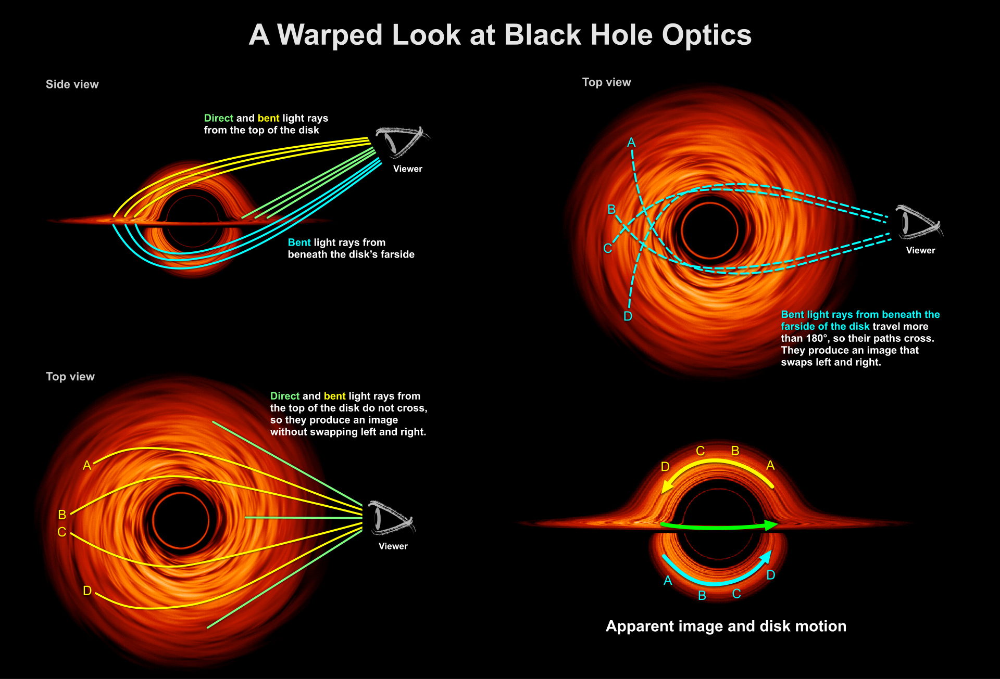
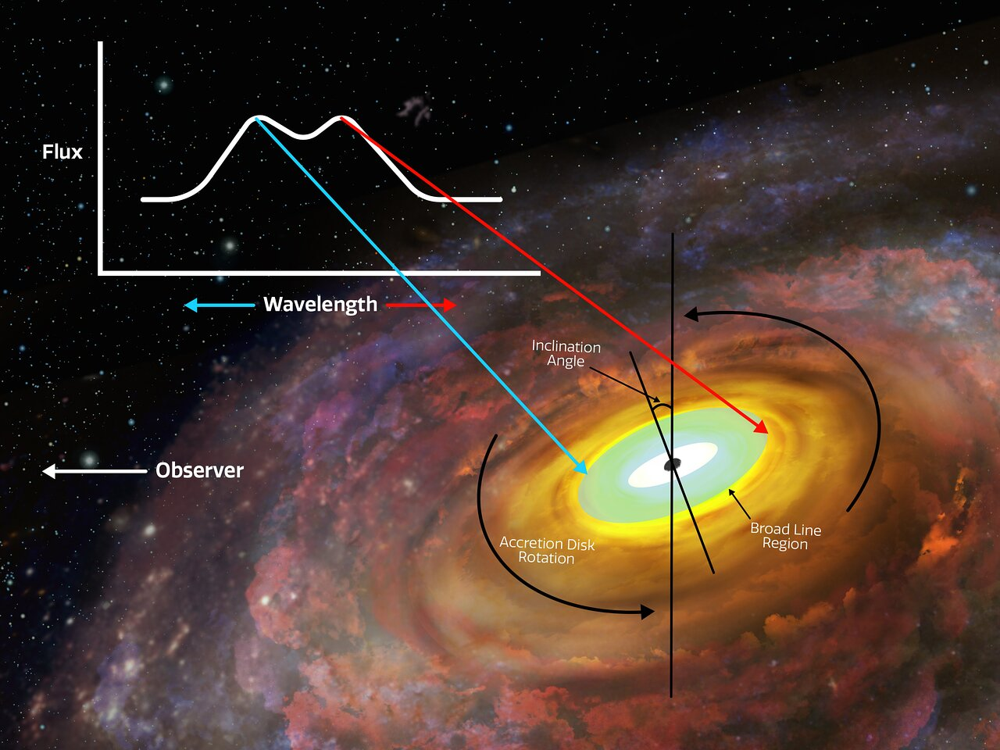

Black Hole Accretion:
Mechanisms, Observational Evidence, and Implications for Galactic Evolution
Abstract:
Black hole accretion is a fundamental astrophysical process through which matter is drawn into a black hole, resulting in the emission of vast amounts of energy. This process is essential for understanding the dynamics of quasars and active galactic nuclei (AGN), which are among the brightest and most energetic phenomena in the universe. The study of accretion disks is pivotal in modern astrophysics as it allows scientists to indirectly observe black holes and explore their influence on cosmic evolution. This article delves into the anatomy of accretion disks, the mechanisms of energy generation, the observational evidence supporting these phenomena, and their implications for galaxy evolution.

Introduction
Accretion is a process that occurs when matter—primarily gas and dust—spirals into a black hole due to gravitational forces. As matter approaches the event horizon, it forms an accretion disk, a rotating disk of material that emits radiation across various wavelengths, enabling astronomers and physicists to study black holes indirectly.
Accretion plays a crucial role in the formation and evolution of cosmic structures, including quasars, AGN, and X-ray binaries. Understanding this process sheds light on the energetic environments that drive galaxy formation and evolution in the universe.
Accretion around black holes represents one of the most energetic phenomena in the universe. It transforms gravitational potential energy into radiation, illuminating quasars and AGN that serve as cosmic beacons visible across billions of light-years. This process is not only central to understanding black holes themselves but also their profound influence on their surroundings, from regulating star formation to driving the evolution of galaxies.
The study of accretion disks has gained prominence due to advancements in multiwavelength astronomy and high-resolution imaging, offering an unprecedented glimpse into the extreme environments near black holes.
Anatomy of an Accretion Disk
Accretion disks are highly dynamic systems governed by complex interactions of gravity, magnetism, and relativistic physics.
Key Features of Accretion Disks
Inner Regions:The inner edge of the disk, known as the innermost stable circular orbit (ISCO), is determined by the black hole's spin. Near the ISCO, matter experiences intense heating due to viscous dissipation, reaching temperatures of millions of degrees, typically around , and emitting X-rays.Outer Regions:Cooler and less energetic, the outer disk radiates primarily in the optical and infrared wavelengths. These regions are vital for understanding the feeding processes of black holes.
Corona:A hot plasma surrounding the disk that emits high-energy X-rays through Compton scattering. The physical origin of the corona remains a topic of active research, with implications for black hole spin measurements.
Relativistic Jets:Some black holes launch collimated jets of particles at near-light speeds, driven by the interplay of magnetic fields and the black hole's rotation. These jets are detectable across radio, optical, and X-ray wavelengths and serve as tracers of accretion processes. For example, jets from the supermassive black hole M87* have been observed extending over 5,000 light-years, demonstrating the power of these phenomena.

Observational Evidence
Detecting failed supernovae presents significant challenges due to their lack of visible outflows. However, advancements in observational techniques have led to the identification of potential candidates and provided indirect evidence for their existence:
Disappearing Stars:
One of the most intriguing aspects of failed supernovae is the concept of "disappearing stars," which gradually fade from view without an observable explosion. An example is the case of N6946-BH1, a red supergiant in the Fireworks Galaxy that suddenly vanished without a supernova signature. This suggests that the star collapsed directly into a black hole, leaving behind no remnant or explosive event.
Neutrino Detection:
During the collapse of a star's core, neutrinos are emitted in vast quantities. Neutrinos interact weakly with matter and can escape the collapsing core, providing vital information about the event. Large neutrino detectors, such as the IceCube Neutrino Observatory, play a crucial role in providing indirect evidence for failed supernovae by detecting the neutrino burst associated with such events.
Gravitational Wave Astronomy:
Failed supernovae contribute to the population of isolated black holes, which could later merge in binary systems. These mergers, observed by gravitational wave detectors like LIGO and Virgo, may provide additional evidence for the existence of failed supernovae. The black holes formed from such events would exhibit distinctive characteristics, such as high masses and no associated supernova remnants.
Transient Surveys:
Observatories that conduct wide-field surveys, such as the Zwicky Transient Facility (ZTF) and the upcoming Vera Rubin Observatory, are instrumental in detecting faint and transient events. These surveys can help identify disappearing stars and weak transients that might indicate failed supernovae, further advancing our understanding of their frequency and distribution.
Radiation Mechanisms
The radiation emitted from an accretion disk is primarily a result of frictional heating, where gravitational potential energy is converted into thermal energy. The disk emits radiation across the electromagnetic spectrum, including X-rays, ultraviolet (UV), and visible light.
Relativistic Effects
Relativity dominates the inner regions of the accretion disk, leading to phenomena such as:
Gravitational Redshift:Light emitted from the inner disk is stretched as it escapes the intense gravitational pull of the black hole.
Doppler Beaming:Rotation of the disk enhances emission from material moving toward the observer while dimming emission from material moving away.
Energy Generation and Jets
The conversion of gravitational potential energy into radiation is the primary mechanism for energy generation in accretion disks. As matter falls inward, it loses potential energy, which is transformed into kinetic energy and subsequently into thermal radiation.
Energy Conversion Efficiency
Black hole accretion is remarkably efficient in converting mass into energy, far exceeding nuclear fusion. For non-rotating Schwarzschild black holes, about 6% of the infalling mass is converted to radiation, while for rapidly spinning Kerr black holes, this efficiency can reach up to 42%. This efficiency makes black holes the most efficient energy sources in the universe, comparable to or exceeding the efficiency of thermonuclear processes in stars.
Astrophysical Jets
The formation of relativistic jets is a defining feature of some accreting black holes. Magnetic fields anchored in the disk and twisted by the black hole’s spin can launch jets through mechanisms like the Blandford-Znajek process. These jets play a vital role in transferring energy to interstellar and intergalactic environments, influencing large-scale structures.
Notable examples of jet-emitting systems include M87*, the first black hole imaged by the Event Horizon Telescope, and various microquasars, such as the black hole in the system GRS 1915+105, that exhibit similar jet phenomena with velocities approaching 99% of the speed of light.

Observational Evidence
The study of accretion disks and jets relies heavily on high-energy observations:
High-Energy Observations:
X-ray telescopes, such as NASA's Chandra X-ray Observatory, and radio interferometers, like the Very Large Array (VLA), have been instrumental in revealing the properties of accretion disks and the jets they produce. X-ray emission from black hole accretion disks typically spans from Hz to Hz, while radio jets emit at much lower frequencies, extending to Hz.
Quasars and AGN:
Quasars are among the most luminous objects in the universe, powered by the accretion of material onto supermassive black holes. Their extreme brightness, often exceeding ergs per second, makes them excellent subjects for studying the effects of accretion on cosmic scales.
Multiwavelength Studies:
Combining observations across various wavelengths—X-ray, optical, and radio—enables a comprehensive analysis of accretion processes and their effects on the surrounding environment. For example, the Hubble Space Telescope’s multiwavelength observations have provided crucial insights into the ultraviolet and optical emissions from accreting systems.
Revealing the Role of Black Hole Spin
Observations of the Fe K-alpha emission line—a spectral feature produced by iron atoms in the inner disk—have been used to estimate black hole spin, offering clues about accretion histories. Recent studies suggest that black holes with masses greater than 10^6 M_\odot exhibit spin rates nearing the maximal value,a = 1, for Kerr black holes.
Implications for Galaxy Evolution
AGN Feedback
Accreting black holes significantly impact their host galaxies:Radiative Feedback: Energy emitted from accretion heats surrounding gas, potentially suppressing star formation. For example, the feedback from AGN can increase the temperature of the surrounding gas to millions of degrees, preventing it from cooling and collapsing into new stars.
Mechanical Feedback: Jets and winds inject momentum into the interstellar medium, regulating galaxy growth. Simulations show that AGN feedback may expel as much as 10% of a galaxy’s mass through energetic outflows.
SMBH-Galaxy Co-Evolution
The observed correlation between supermassive black hole mass and galaxy bulge velocity dispersion underscores the role of accretion in co-evolving black holes and galaxies. This correlation, exemplified by the MBH−σM_{\mathrm{BH}}-\sigma relation, suggests that the growth of black holes and their host galaxies are tightly linked through accretion processes.
Challenges and Future Directions
Theoretical Complexities
Accurately modeling the role of magnetohydrodynamic (MHD) turbulence and magnetic reconnection in accretion disks remains a significant challenge. Current simulations involve complex 3D models that require supercomputing power to resolve the intricate dynamics of the accretion flow.
Advancements in Observational Techniques
Upcoming facilities like the James Webb Space Telescope (JWST) and next-generation X-ray observatories promise higher sensitivity and resolution, enabling more detailed studies of accretion physics. The James Webb Space Telescope, with its infrared capabilities, is expected to detect the thermal emissions from accretion disks around black holes at redshifts of up to 10, opening new windows into the high-redshift universe.
AI and Big Data
Machine learning algorithms are increasingly employed to analyze large datasets from multiwavelength surveys, offering new insights into accretion phenomena. These algorithms can process petabytes of observational data, revealing hidden patterns in the behavior of accreting systems that were previously undetectable. 
Conclusion:
In conclusion, black hole accretion serves as a powerful engine of cosmic energy, fundamentally shaping the structure and evolution of the universe. By studying accretion disks and their associated phenomena, astrophysicists gain valuable insights into the complex interactions between black holes and their surroundings, ultimately enhancing our understanding of cosmic evolution. The continued exploration of accretion processes promises to unveil further secrets of the universe and the fundamental forces that govern its behavior.
References:
1. Narayan, R., & McClintock, J. E. (2013). "Observational Evidence for Black Holes." The Astrophysical Journal, 584(1), 843-871.
2. Kormendy, J., & Ho, L. C. (2013). "Coevolution (or not) of Supermassive Black Holes and Host Galaxies." Annual Review of Astronomy and Astrophysics, 51, 511-653.
3. Blandford, R. D., & Znajek, R. L. (1977). "Electromagnetic Extraction of Energy from a Kerr Black Hole." Monthly Notices of the Royal Astronomical Society, 179(3), 433-456.
4. Merloni, A., Heinz, S., & di Matteo, T. (2003). "A Fundamental Plane of Black Hole Activity." Monthly Notices of the Royal Astronomical Society, 345(4), 1057-1076.